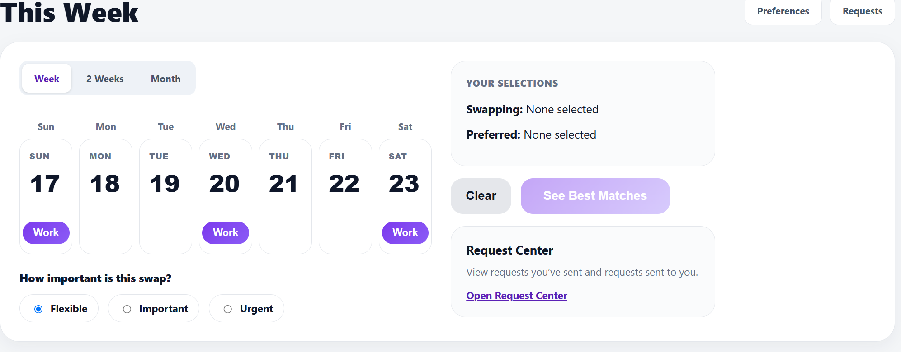
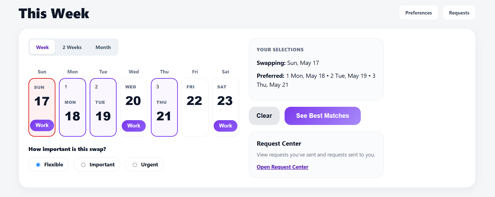
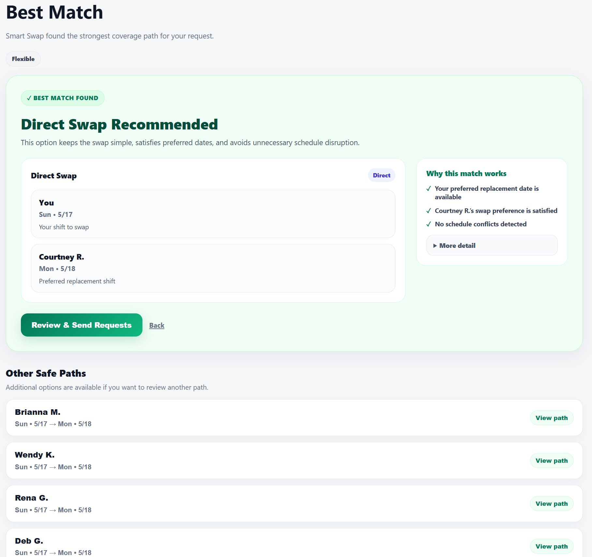

CareConnect is a digital intake layer that captures, categorizes, and
routes patient requests before they enter existing nurse communication
systems.
The system supports clearer communication, more consistent routing, and
better visibility into frontline workflow demands.
Structured patient request capture
Role-based routing logic
Time-sensitive prioritization
Language-accessible intake configuration
The Clinical Workflow Gap
In many hospital environments, patient requests enter communication
systems in unstructured formats. This can create ambiguity, inefficient
routing, role confusion, and limited visibility into response performance.
CareConnect addresses this through structured intake logic developed from
frontline workflow analysis and bedside experience.
CareConnect Integration Model
Designed as a lightweight digital intake layer
Built on configurable workflow logic
Supports API, webhook, or routing-level integration
Call light, secure messaging, or vendor communication system
Smart Swap
Smart Swap is an intelligent healthcare shift swap platform that helps
employees exchange shifts while protecting staffing rules, schedule
integrity, and organizational policies.
Designed from frontline nursing experience, Smart Swap supports both
direct and multi-person shift swaps that are difficult to coordinate
manually or through traditional scheduling tools.
Direct one-to-one shift swaps
Intelligent multi-person shift swap matching
Eligibility and role validation
Pending shift reservation during approvals
Prevention of double booking and schedule conflicts
Staffing rule enforcement
Smart match recommendations
Audit-ready swap history
Smart Swap Interface
Smart Swap provides a clear employee-facing workflow for selecting shifts,
reviewing matches, and sending safe swap requests.

Weekly schedule and swap selection

Preferred replacement shift selection

Best match recommendation with safe paths
Smart Swap Integration Readiness
Smart Swap is designed to integrate with leading workforce management
platforms through secure APIs. The application can synchronize employee
schedules, validate eligibility, retrieve shift information, and submit
approved shift swaps while allowing the workforce management system to
remain the source of truth.
Smart Swap Integration Path
Employee
Initiates shift swap request
→
Smart Swap Engine
Matching, validation, eligibility, and staffing rules
→
Workforce System
Existing enterprise scheduling platform
Vendor Partnership Opportunities
Crawford Solutions products are designed to enhance existing healthcare
software ecosystems by adding focused workflow layers for communication,
scheduling, and operational efficiency.
Enhances existing healthcare platforms
Adds structured workflow logic before escalation or approval
Supports configurable routing and eligibility frameworks
Improves clarity of role-based task and schedule workflows
Designed for integration, pilot exploration, and partnership discussions
Built From the Frontline
Crawford Solutions was founded by a clinical workflow specialist with
over 10 years of frontline nursing experience.
Our systems are developed through applied workflow analysis, modular logic
design, and practical bedside validation.
CareConnect Overview (1 Minute)
Narrated overview of structured intake and routing architecture.
Contact
For vendor partnerships, integration discussions, pilot exploration, or
product demonstrations:
info@crawfordsolutionsllc.com